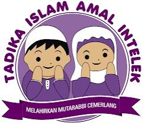

This is a summary of my educational journey through life.
| Institution | Year | Description | Image |
|---|---|---|---|
| TADIKA AMAL (JIM) | 2009 | Early education and first exposure to structured learning and teamwork. |  |
| PRASEKOLAH SK SULTAN ABDUL AZIZ (PRASKSAA) | 2010 | Introduction to basic academic and social skills in a nurturing environment. | |
| SK SUNGAI TUNGKU (SKST) | 2011-2016 | Active participation in extracurricular activities, developing leadership skills. | |
| SRAR AN-NAIM (SRAR) | 2011-2016 | Achieved a strong foundation in Islamic studies alongside core academics. | |
| SMK SERI PERAK (SEMARAK) | 2017-2021 | Excelled in academic and sports activities, building lifelong friendships. | |
| UNIVERSITI TEKNOLOGI MARA (DIPLOMA) | 2022-2025 | Specialized in information technology, with internship experience in IT solutions. |